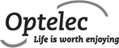

Open Web – expert op het gebied van Hippo CMS
Een toegankelijke partner met een blik op vooruitgangWij helpen u met de complete vraagstelling
Van idee tot product werkt Open Web met u mee.Open Web is een jonge onderneming die in een zeer korte tijd is uitgegroeid tot toonaangevende Hippo-specialist. We zetten graag onze kennis en ervaring met open source technologieën en oplossingen in om aan uw softwarewensen te kunnen voldoen. Niet alleen als project, maar ook op consultancybasis.
Onze experts hebben grote passie voor hun werk en blijven de grenzen van open source technologieën opzoeken. ‘Open Source’ ligt ten grondslag aan onze dienstverlening en Open Web draagt dat onder meer uit door het beschikbaar stellen van herbruikbare componenten. We vinden innovatie van producten erg belangrijk in een technologisch bedrijf zoals onze. Juist daarom herinvesteren wij een aanzienlijk deel van onze inkomsten in innovatie en inspireren wij hiermee onze klanten en relaties.
Hoewel wij ons focussen op de realisatie van grote en complexe internet- en intranetomgevingen op basis van het Hippo CMS, helpen wij ook graag de business doelstellingen te verwezenlijken door onder andere uw softwareproject te realiseren. Dit is mogelijk door middel van advies, ontwerp, hosting en applicatieonderhoud. Daarnaast helpen we u ook graag met het samenstellen van een nóg sterker IT-team door onze professionals te detacheren. Daag ons uit!
Met trots
hebben wij gewerkt voor o.a.:

- 


Onze werkwijze
Iedere organisatie heeft zijn eigen werkwijze en wij passen graag onze manier van werken aan op die van onze klanten. Waar van toepassing, adviseren wij ook onze klanten over mogelijke verbeteringen in hun werkwijze.
Projectmatig
- Planning en systeemarchitectuur
- Ontwikkeling in sprints
- Afronding en oplevering
Ontwikkelfase
- Sprint backlog
- Backlogtaken uitgebreid door team
- Presenteerbare functionaliteit
Het team
Een ervaren team met brede kennis.

Omar Ras
“Mijn naam is Omar en ik ben een Agile Project Manager en Scrum Master die gek is op Agile. Daarnaast heb ik veel ervaring met E-commerce en vind ik het leuk om zo veel mogelijk allround te zijn. Ik houd ervan teams te helpen hun doelen te bereiken en heb daar veel plezier in. In het verleden heb ik samengewerkt met de oprichters van Open Web en vind het een plezier om weer met hen samen te werken. Wanneer ik niet werk ben ik te vinden met familie en vrienden.”
Ebrahim Aharpour
“Mijn naam is Ebrahim en ik ben een ervaren Java developer met een ontzettende behoefte om te leren en een passie voor de nieuwste technologie. Ik geloof sterk in open source en heb een lange geschiedenis van het bijdragen aan de open source community. Bovendien geloof ik in de kracht van kennisdelen en streef ernaar een omgeving te creëren waarin mensen gepassioneerd zijn over technologie en hun ideeën, visies en ambities delen.”
Joost Oudeman
“Mijn naam is Joost en ik werk als Hippo developer bij Open Web. Ik zie graag overal het positieve in en draag ook graag bij om dat positieve naar boven te halen. Daarom was het een vrij eenvoudige keuze om de stap naar Open Web te maken. Niet alleen was het een logische stap in mijn carrière, maar daarnaast zijn mijn collega's uitstekende sparringpartners betreffende innovaties en persoonlijke interesses.
Bovendien kan ik een goede bijdrage leveren aan de groei van het bedrijf. Tevens ben ik geïnteresseerd in de spirituele kant van het leven en houd mij bezig met Reiki. Dit helpt mij uiteraard ook in mijn werk. Het Hippo CMS heeft weinig geheimen voor me, gezien ik de geboorte van Hippo 7 nog heb meegemaakt en sindsdien vrijwel constant betrokken ben geweest bij Hippo projecten.
Ik geef niet snel op; ik ben effectief in het achterhalen van de oorzaak van problemen, om zo het probleem op de beste manier te verhelpen. Dit komt van pas bij zowel het debuggen van code als bij andere zaken in het project, waarbij ik een balans bewaar tussen prioriteit, winst en kosten.”
Gridi Serbo
“Mijn naam is Gridi en ik ben werknemer ‘001’ van Open Web. Ik ben een Java software developer die verliefd is geworden op Hippo CMS sinds de eerste dag. Na een aantal jaar van goede samenwerkingservaring met de oprichters van dit bedrijf, had ik geen twijfels over het succes van het nieuwe avontuur en heb me direct aangesloten bij Open Web toen het werd opgericht.
Als ik niet aan het spelen ben met Hippo, ben ik bezig met mijn twee passies, namelijk operamuziek en geschiedenisboeken. Daarnaast vind ik het leuk om strategiespellen te spelen en dit heeft me dan ook in optimalisatiemodus gezet voor elke taak die ik uitvoer, elke functionaliteit die ik implementeer of probleem dat ik oplos.”
Sara Kohneh
“Mijn naam is Sara en ik ben een juniormedewerker van Open Web IT Solutions. Ik ben altijd geïnteresseerd geweest in nieuwe technologie en gadgets. Ik geloof dat werken bij Open Web een geweldige kans is om als junior developer te leren van mijn ervaren collega’s in diverse projecten. Mijn doel is om mijn vaardigheden en carrière te bevorderen. Ik ben gespecialiseerd in Hippo CMS development en neem deel in Hippo projecten sinds ik begon te werken bij Open Web. Naar mijn mening is Hippo CMS zeer interessant en uitdagend. Als teamlid in projecten probeer ik altijd mijn best te doen om actief en een goede steun voor collega’s te zijn. In mijn vrije tijd houd ik er van om boeken te lezen, spelletjes te spelen en documentaires te kijken.”
Matthijs Tolkamp
“Mijn naam is Matthijs en ik ben een Java software developer die uitgebreide ervaring heeft met implementaties van Hippo. Ik ben een waardevol teamlid geweest bij elk project dat ik heb gedaan door mijn pragmatische manier van werken. Het beginnen bij Open Web was voor mij een gemakkelijke keuze omdat het een omgeving is waar ik veel kan leren van collega’s en waar ik ook de kans heb om een heel klein bedrijf van de grond helpen op te bouwen. In staat te zijn om kennis te delen tussen zo’n kleine groep collega’s is een van de belangrijkste redenen waarom ik ben gestart bij Open Web.
Ik houd van allerlei soorten puzzels en het proberen te zoeken naar een slimme manier om die op te lossen. Dit komt terug in hoe ik Javacode schrijf maar ook in mijn persoonlijke leven waar ik veel spelletjes speel. Als ik niet druk ben met het omverwerpen van andere mensen in bordpelletjes, speel ik toneel met mijn eigen theaterbedrijf of lees ik fantasieboeken.”
Levente Bokor
“Mijn naam is Levente en ik ben oprichter van Open Web. Na bijna 20 jaar met informatietechnologie bezig geweest te zijn, vind ik nog steeds dat des te meer ik nieuwe dingen weet, des te meer ik me realiseer hoeveel ik nog niet weet. Ik stel graag doelen en ik zet alles op alles om die te bereiken. Een eigen bedrijf hebben heeft eigenlijk iets te lang op mijn lijst gestaan. Met mijn technische achtergrond denk ik eerder in oplossingen dan in problemen.
Als vader van 4 zeer lieve meiden probeer ik de balans te vinden tussen mijn bedrijf en mijn gezin. Tijdens het hardlopen probeer ik de grenzen van mijn lichaam op te zoeken. En als ik nog wat tijd over heb, het gebeurt helaas te weinig, dan ga ik graag achter mijn drumstel zitten.”
Wouter Spaak
“Mijn naam is Wouter en ik werk als front-end developer. Ik houd ervan als dingen mooi zijn en soepel en intuïtief werken. Als front-end developer bij Open Web heb ik mijn werk goed gedaan als de gebruiker de software met een glimlach gebruikt. Bij Open Web heb ik de mogelijkheid gekregen om samen met mijn collega's aan complexe systemen te werken. Met elkaar oplossingen zoeken die perfect werken én deze perfect aanvoelen, vind ik ontzettend uitdagend.
In mijn vrije tijd vind ik weinig zo leuk als koken voor vrienden en samen genieten van goede wijn. Ik lees graag literatuur en bezoek geregeld musea en galeries.”

“Open Web biedt mij de mogelijkheid om mijn Agile kennis continu te verbreden en het direct toe te passen in de praktijk”
Omar, Scrum Master

“Mijn collega's zijn uitstekende sparringpartners betreffende innovatie en persoonlijke interesses”
Joost, Hippo Developer

“Ik heb mijn werk goed gedaan als de gebruiker de software met een glimlach gebruikt”
Wouter, Front-end Developer